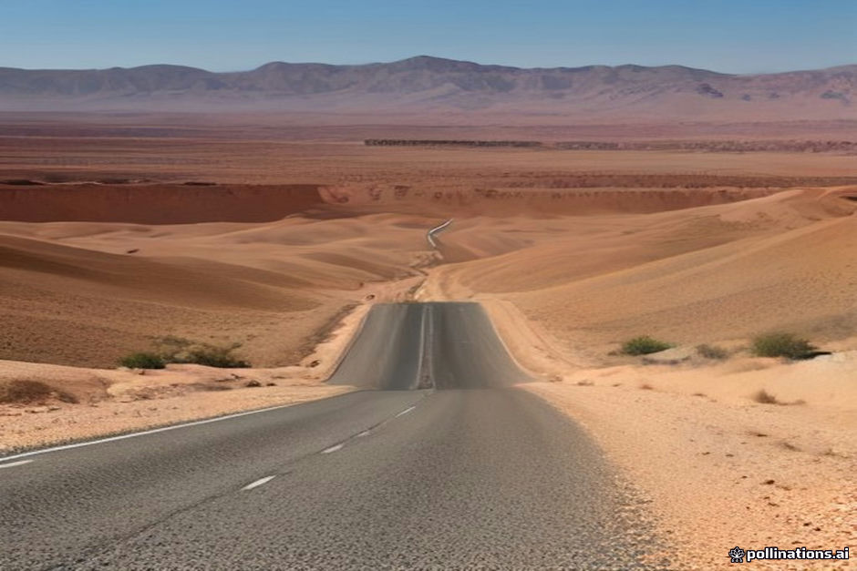

The highway stretch from Ouarzazate out toward the Erg Chebbi dunes covers roughly 370 kilometers of semi-arid plateaus, river valleys, and remote stretches of tarmac. Along this route, long gaps between towns mean that managing restroom stops requires a bit of anticipation rather than relying on spontaneous roadside options.
We prefer to give travelers honest planning notes rather than sugarcoating the realities of rural Moroccan infrastructure. Facilities vary widely—from modern highway service stations to basic squat toilets in remote rural outposts—and knowing how to prepare makes the journey entirely manageable.
The Anatomy of Roadside Facilities
As you leave Ouarzazate and pass through the Todra or Dades valley approaches, you will encounter a mix of infrastructure. Larger stops near tourist hubs like Tinghir or Erfud generally feature western-style sit-down toilets, running water, and basic maintenance.
Once you venture further into rural stretches or minor mountain passes, facilities transition to traditional Moroccan squat toilets. These are typically functional but lack toilet paper and soap, making your personal kit essential.
- Always carry your own pocket tissues or wet wipes.
- Keep a small bottle of hand sanitizer accessible in your day bag.
- Expect a small coin tip (typically 1 to 2 dirhams) for the attendant at staffed public toilets.
Timing Your Stops with Your Driver
Your driver knows the reliable spots along the route where water is running and cleanliness standards are acceptable. If you feel the need to use the restroom, let your driver know immediately rather than waiting for a specific town, as the next suitable café might be forty minutes away.
Most private or organized tours from Marrakesh or Fes build in logical stops for coffee, lunch, and stretching every 90 minutes to two hours. These scheduled stops are your best opportunity to use clean, reliable facilities.
- Communicate your needs early before entering remote gorge stretches.
- Take advantage of restaurant stops even if you do not feel an urgent need.
Hydration Balance in Arid Heat
It is a common mistake to reduce your water intake out of concern for finding a restroom. In the desert environment between Ouarzazate and Merzouga, dehydration sets in quickly due to dry air and high temperatures.
Drink fluids consistently throughout the day and rely on scheduled stops to empty your bladder. Your driver can pull over safely on wide shoulders if an absolute emergency arises between settlements.
- Drink at least two to three liters of bottled water daily.
- Avoid excessive caffeine or sugary sodas that accelerate dehydration.
Camp Facilities Versus Highway Stops
Once you arrive at the Erg Chebbi dunes, your accommodation standards shift depending on whether you booked a standard or luxury desert camp. Luxury camps feature private en-suite flush toilets and running water inside your tent.
Standard desert camps typically provide shared permanent or semi-permanent block bathrooms with running water, sinks, and sit-down toilets, though hot water availability can vary based on solar power generation.
- Read our desert camp bathrooms and hygiene guide for a deeper look.
- Check your camp tier comparison notes before booking.
| Facility Type | What to Expect | |
|---|---|---|
| Highway Cafés | Semi-modern | Sit-down toilets, running water, occasional attendant. |
| Rural Outposts | Traditional | Squat toilets, bucket flush, no paper provided. |
| Tourist Restaurants | Standard Western | Clean, well-maintained, paper and soap usually stocked. |
| Luxury Desert Camps | En-suite private | Modern flush toilets, hot showers, private tent integration. |
| Standard Desert Camps | Shared blocks | Flush toilets, running water, communal sinks. |

Illustration, not a photograph — for the real thing, you'll have to stand on the ridge yourself.
Quick answers
A few follow-up questions travelers ask about this.
Will I have to use outdoor bushes along the desert highway?
Rarely. There are enough cafés, gas stations, and towns along the route that you can almost always reach a built facility with a short wait. Drivers can also pull over discreetly in remote stretches if an emergency happens.
Should I tip public restroom attendants?
Yes. Leaving 1 or 2 dirhams on the small plate at the entrance of staffed public toilets is standard practice and helps maintain the cleanliness of the facilities.
Are western-style toilets available at all stops?
No. While larger tourist restaurants and modern fuel stations have sit-down toilets, many rural locations and older cafes rely exclusively on traditional squat toilets.
Planning your own route?
Tell us your dates and what matters to you — we'll answer with a straight recommendation, not a brochure.
Send an inquiry See the itineraries